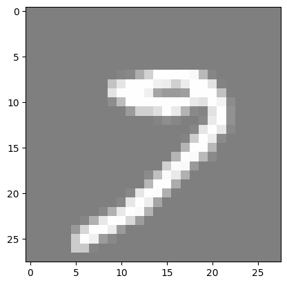
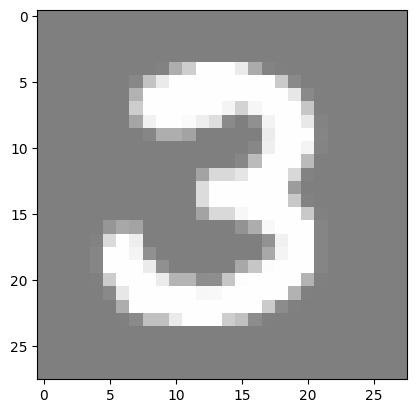
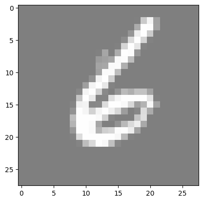
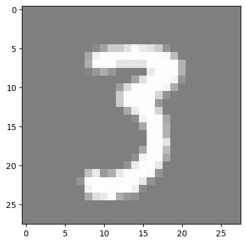

Lesson 1: MNIST Classification using Fully Connected Neural Networks#
Introduction#
MNIST is a simple computer vision dataset. It consists of 28x28 pixel images of handwritten digits. The dataset also includes labels for each image, telling us which digit it is (0, 1, 2, …, 9).
In this notebook, we will use the MNIST dataset to train a simple neural network to classify the images. We will use the PyTorch library to build a simple fully connected neural network and train it on the dataset.
The notebook is divided into the following sections:
Importing the libraries
Loading the dataset
Preparing the dataset
Building the neural network
Training the model
Evaluating the model
Reloading the model and making predictions
Throughout the notebook, you will see ‘#TODO’ comments. These are placeholders for you to write your own code. You should write the code to complete the functionality of the neural network.
Imports#
import torch
import torch.nn as nn
import torchvision
import torchvision.transforms as transforms
import matplotlib.pyplot as plt
import numpy as np
from tqdm import tqdm
import os
Matplotlib is building the font cache; this may take a moment.
Hyperparameters#
# Determine if a GPU is available, and use it if so
# we will use it to train our model, if not we will use the CPU
device = torch.device("cuda" if torch.cuda.is_available() else "cpu")
input_size = 784 # MNIST data is 28x28 pixels
hidden_size = 500 # number of nodes in the hidden layer
num_classes = 10 # number of output classes (0-9)
num_epochs = 5 # number of times we will loop through the entire dataset
batch_size = 100 # number of images to process at once
learning_rate = 0.001 # how much we update our weights each iteration
MNIST#
Load MNIST#
The first step is to load the MNIST dataset. We will use the tensorflow_datasets library to load the dataset.
# create datasets folder
os.makedirs("../datasets", exist_ok=True)
# MNIST dataset
train_dataset = torchvision.datasets.MNIST(
root="../datasets", train=True, transform=transforms.ToTensor(), download=True
)
test_dataset = torchvision.datasets.MNIST(
root="../datasets", train=False, transform=transforms.ToTensor()
)
Downloading http://yann.lecun.com/exdb/mnist/train-images-idx3-ubyte.gz
---------------------------------------------------------------------------
KeyboardInterrupt Traceback (most recent call last)
Cell In[4], line 4
1 # create datasets folder
2 os.makedirs("../datasets", exist_ok=True)
3 # MNIST dataset
----> 4 train_dataset = torchvision.datasets.MNIST(
5 root="../datasets", train=True, transform=transforms.ToTensor(), download=True
6 )
7
File /opt/hostedtoolcache/Python/3.12.13/x64/lib/python3.12/site-packages/torchvision/datasets/mnist.py:99, in MNIST.__init__(self, root, train, transform, target_transform, download)
96 return
98 if download:
---> 99 self.download()
101 if not self._check_exists():
102 raise RuntimeError("Dataset not found. You can use download=True to download it")
File /opt/hostedtoolcache/Python/3.12.13/x64/lib/python3.12/site-packages/torchvision/datasets/mnist.py:187, in MNIST.download(self)
185 try:
186 print(f"Downloading {url}")
--> 187 download_and_extract_archive(url, download_root=self.raw_folder, filename=filename, md5=md5)
188 except URLError as error:
189 print(f"Failed to download (trying next):\n{error}")
File /opt/hostedtoolcache/Python/3.12.13/x64/lib/python3.12/site-packages/torchvision/datasets/utils.py:378, in download_and_extract_archive(url, download_root, extract_root, filename, md5, remove_finished)
375 if not filename:
376 filename = os.path.basename(url)
--> 378 download_url(url, download_root, filename, md5)
380 archive = os.path.join(download_root, filename)
381 print(f"Extracting {archive} to {extract_root}")
File /opt/hostedtoolcache/Python/3.12.13/x64/lib/python3.12/site-packages/torchvision/datasets/utils.py:130, in download_url(url, root, filename, md5, max_redirect_hops)
127 _download_file_from_remote_location(fpath, url)
128 else:
129 # expand redirect chain if needed
--> 130 url = _get_redirect_url(url, max_hops=max_redirect_hops)
132 # check if file is located on Google Drive
133 file_id = _get_google_drive_file_id(url)
File /opt/hostedtoolcache/Python/3.12.13/x64/lib/python3.12/site-packages/torchvision/datasets/utils.py:78, in _get_redirect_url(url, max_hops)
75 headers = {"Method": "HEAD", "User-Agent": USER_AGENT}
77 for _ in range(max_hops + 1):
---> 78 with urllib.request.urlopen(urllib.request.Request(url, headers=headers)) as response:
79 if response.url == url or response.url is None:
80 return url
File /opt/hostedtoolcache/Python/3.12.13/x64/lib/python3.12/urllib/request.py:215, in urlopen(url, data, timeout, cafile, capath, cadefault, context)
213 else:
214 opener = _opener
--> 215 return opener.open(url, data, timeout)
File /opt/hostedtoolcache/Python/3.12.13/x64/lib/python3.12/urllib/request.py:515, in OpenerDirector.open(self, fullurl, data, timeout)
512 req = meth(req)
514 sys.audit('urllib.Request', req.full_url, req.data, req.headers, req.get_method())
--> 515 response = self._open(req, data)
517 # post-process response
518 meth_name = protocol+"_response"
File /opt/hostedtoolcache/Python/3.12.13/x64/lib/python3.12/urllib/request.py:532, in OpenerDirector._open(self, req, data)
529 return result
531 protocol = req.type
--> 532 result = self._call_chain(self.handle_open, protocol, protocol +
533 '_open', req)
534 if result:
535 return result
File /opt/hostedtoolcache/Python/3.12.13/x64/lib/python3.12/urllib/request.py:492, in OpenerDirector._call_chain(self, chain, kind, meth_name, *args)
490 for handler in handlers:
491 func = getattr(handler, meth_name)
--> 492 result = func(*args)
493 if result is not None:
494 return result
File /opt/hostedtoolcache/Python/3.12.13/x64/lib/python3.12/urllib/request.py:1373, in HTTPHandler.http_open(self, req)
1372 def http_open(self, req):
-> 1373 return self.do_open(http.client.HTTPConnection, req)
File /opt/hostedtoolcache/Python/3.12.13/x64/lib/python3.12/urllib/request.py:1344, in AbstractHTTPHandler.do_open(self, http_class, req, **http_conn_args)
1342 try:
1343 try:
-> 1344 h.request(req.get_method(), req.selector, req.data, headers,
1345 encode_chunked=req.has_header('Transfer-encoding'))
1346 except OSError as err: # timeout error
1347 raise URLError(err)
File /opt/hostedtoolcache/Python/3.12.13/x64/lib/python3.12/http/client.py:1358, in HTTPConnection.request(self, method, url, body, headers, encode_chunked)
1355 def request(self, method, url, body=None, headers={}, *,
1356 encode_chunked=False):
1357 """Send a complete request to the server."""
-> 1358 self._send_request(method, url, body, headers, encode_chunked)
File /opt/hostedtoolcache/Python/3.12.13/x64/lib/python3.12/http/client.py:1404, in HTTPConnection._send_request(self, method, url, body, headers, encode_chunked)
1400 if isinstance(body, str):
1401 # RFC 2616 Section 3.7.1 says that text default has a
1402 # default charset of iso-8859-1.
1403 body = _encode(body, 'body')
-> 1404 self.endheaders(body, encode_chunked=encode_chunked)
File /opt/hostedtoolcache/Python/3.12.13/x64/lib/python3.12/http/client.py:1353, in HTTPConnection.endheaders(self, message_body, encode_chunked)
1351 else:
1352 raise CannotSendHeader()
-> 1353 self._send_output(message_body, encode_chunked=encode_chunked)
File /opt/hostedtoolcache/Python/3.12.13/x64/lib/python3.12/http/client.py:1113, in HTTPConnection._send_output(self, message_body, encode_chunked)
1111 msg = b"\r\n".join(self._buffer)
1112 del self._buffer[:]
-> 1113 self.send(msg)
1115 if message_body is not None:
1116
1117 # create a consistent interface to message_body
1118 if hasattr(message_body, 'read'):
1119 # Let file-like take precedence over byte-like. This
1120 # is needed to allow the current position of mmap'ed
1121 # files to be taken into account.
File /opt/hostedtoolcache/Python/3.12.13/x64/lib/python3.12/http/client.py:1057, in HTTPConnection.send(self, data)
1055 if self.sock is None:
1056 if self.auto_open:
-> 1057 self.connect()
1058 else:
1059 raise NotConnected()
File /opt/hostedtoolcache/Python/3.12.13/x64/lib/python3.12/http/client.py:1023, in HTTPConnection.connect(self)
1021 """Connect to the host and port specified in __init__."""
1022 sys.audit("http.client.connect", self, self.host, self.port)
-> 1023 self.sock = self._create_connection(
1024 (self.host,self.port), self.timeout, self.source_address)
1025 # Might fail in OSs that don't implement TCP_NODELAY
1026 try:
File /opt/hostedtoolcache/Python/3.12.13/x64/lib/python3.12/socket.py:850, in create_connection(address, timeout, source_address, all_errors)
848 if source_address:
849 sock.bind(source_address)
--> 850 sock.connect(sa)
851 # Break explicitly a reference cycle
852 exceptions.clear()
KeyboardInterrupt:
After downloading the dataset, we will use torch dataloaders to load the data. Dataloader is a utility that helps us to load the data in batches and also shuffle the data.
# Data loader
train_loader = torch.utils.data.DataLoader(
dataset=train_dataset, batch_size=batch_size, shuffle=True
)
test_loader = torch.utils.data.DataLoader(
dataset=test_dataset, batch_size=batch_size, shuffle=False
)
Visualize MNIST#
## Visualize MNIST
# functions to show an image
def imshow(img):
img = img / 2 + 0.5 # unnormalize
npimg = img.numpy()
plt.imshow(np.transpose(npimg, (1, 2, 0)))
plt.show()
for _ in range(3):
image, _ = train_dataset[np.random.randint(0, len(train_dataset))]
imshow(torchvision.utils.make_grid(image))



Data Augmentation#
# TODO:
# Watch this very short (it's literally a YouTube Short) video about data augmentation: https://www.youtube.com/shorts/S-7LpWzUaOg
# Read about data augmentation for images in PyTorch: https://www.kaggle.com/code/mohamedmustafa/7-data-augmentation-on-images-using-pytorch
# Add data augmentation to the MNIST dataset
Neural Network#
class Net(nn.Module): # inherit from nn.Module
def __init__(self, input_size, hidden_size, num_classes):
super(Net, self).__init__() # call the constructor of the parent class
self.fc1 = nn.Linear(input_size, hidden_size) # first fully connected layer
self.relu = nn.ReLU() # activation function
# TODO:
# 1. Add a second fully connected layer (don't forget to add an activation function).
# 2. (Optional) Experiment with different activation functions,
# such as sigmoid, tanh, leaky relu and parametric relu.
self.fc2 = nn.Linear(hidden_size, num_classes) # second fully connected layer
# softmax is used for multi-class classification problems
# it converts the output to a probability distribution over the classes
# the class with the highest probability is the predicted class
# logsoftmax is used to improve numerical stability
self.logsoftmax = nn.LogSoftmax(dim=1)
def forward(self, x: torch.Tensor) -> torch.Tensor:
"""
:param x: input tensor (batch_size, input_size)
"""
x = self.fc1(x)
x = self.relu(x)
x = self.fc2(x)
x = self.logsoftmax(x)
return x
Initialization#
# create the model and move it to the GPU if available
model = Net(input_size, hidden_size, num_classes).to(device)
# loss function
# we usually use cross-entropy loss for classification problems
# it applies log softmax to the output and then applies negative log likelihood loss
# in our model, we apply logsoftmax in the forward method, so we don't
# the loss function to do it.
# Thence, instead of using nn.CrossEntropyLoss, we use nn.NLLLoss
# simply,
# * If we apply logsoftmax in the forward method, we use nn.NLLLoss
# * If we don't apply logsoftmax in the forward method, we use nn.CrossEntropyLoss
criterion = nn.NLLLoss() # negative log likelihood loss
# optimizer
# we use the Adam optimizer, it is a popular optimizer
# it is an extension to stochastic gradient descent
# it computes adaptive learning rates for each parameter
optimizer = torch.optim.Adam(model.parameters(), lr=learning_rate)
Training the Model#
# Training loop
total_step = len(train_loader)
for epoch in range(num_epochs):
# Initialize progress bar
progress_bar = tqdm(enumerate(train_loader), total=total_step, leave=True)
for i, (images, labels) in progress_bar:
# Move tensors to the configured device
images = images.reshape(-1, 28 * 28).to(device) # flatten the images
# flatten the images to be (batch_size, 28*28)
# this is important because FCNNs take a 1D tensor as input
labels = labels.to(device)
# Forward pass
outputs = model(images)
loss = criterion(outputs, labels)
# Backpropagation and optimization
optimizer.zero_grad()
loss.backward()
optimizer.step()
# Update progress bar description
progress_bar.set_description(
f"Epoch [{epoch+1}/{num_epochs}], Step [{i+1}/{total_step}], Loss: {loss.item():.4f}"
)
Epoch [1/5], Step [600/600], Loss: 0.1293: 100%|██████████| 600/600 [00:03<00:00, 184.70it/s]
Epoch [2/5], Step [600/600], Loss: 0.0418: 100%|██████████| 600/600 [00:03<00:00, 184.13it/s]
Epoch [3/5], Step [600/600], Loss: 0.0595: 100%|██████████| 600/600 [00:03<00:00, 183.74it/s]
Epoch [4/5], Step [600/600], Loss: 0.0224: 100%|██████████| 600/600 [00:03<00:00, 186.07it/s]
Epoch [5/5], Step [600/600], Loss: 0.0529: 100%|██████████| 600/600 [00:03<00:00, 184.28it/s]
See how the model performs better as it trains for more epochs.
Evaluation#
# Test the model
# In the test phase, we don't need to compute gradients (for memory efficiency)
with torch.no_grad():
correct = 0
total = 0
for images, labels in test_loader:
images = images.reshape(-1, 28 * 28).to(device)
labels = labels.to(device)
outputs = model(images)
_, predicted = torch.max(outputs.data, 1)
total += labels.size(0)
correct += (predicted == labels).sum().item()
print(
"Accuracy of the network on the 10000 test images: {:.2f}%".format(
100 * correct / total
)
)
# Save the model checkpoint
os.makedirs("../saved_models", exist_ok=True)
torch.save(model.state_dict(), "../saved_models/mnist_fcn_model.ckpt")
Accuracy of the network on the 10000 test images: 97.85%
Reloading the Model and Making Predictions#
model = Net(input_size, hidden_size, num_classes).to(device)
model.load_state_dict(torch.load("../saved_models/mnist_fcn_model.ckpt"))
<All keys matched successfully>
# Sample inference
image, label = test_dataset[np.random.randint(0, len(test_dataset))]
image = image.reshape(-1, 28 * 28).to(device)
output = model(image)
_, predicted = torch.max(output, 1)
# show image
imshow(torchvision.utils.make_grid(image.cpu().reshape(1, 1, 28, 28)))
print(f"Predicted: {predicted.item()}, Actual: {label}")

Predicted: 3, Actual: 3